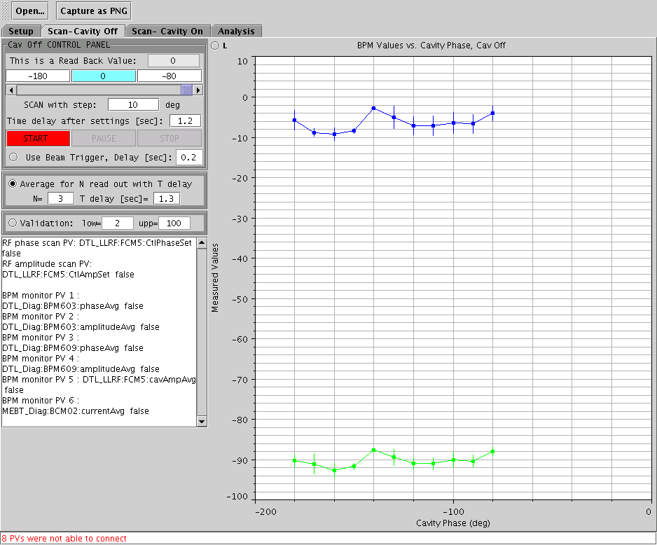

PASTA - Phase and Amplitude Scan and Tuning Application
Quick Start
General Description
More Detailed Instructions
Model Scans for DTL-CCL
Note: when analyzing data taken before 10/11/04, change the saved
minimum and and maximum scan phases to their previous value + the
cavPhaseOffset.
Quick Start
- Pick a preset document by going to file -> open, or file ->
open recent. Preset files will be created and saved under the names
like dtl1.pst for setting the DTL1_10_10.pst, etc:

- The application will start with the "setup" tab selected. The
BPMs used in the analysis and the cavity to be scanned are shown. You
do not need to do or click anything on this tab. It is just for
information purposes. Be sure to deactivate all downstream cavities
that have BPMs in them that you are using (either turn the amplitude to
0, or set the timing so that the beam is not accelerated by these other
cavities). At present, this is not done automatically. In the
rightmost column you can also select a BCM to use as a validation PV
during the scan (i.e. make sure beam is present when taking values).

- Select the "Scan Cavity Off" tab. This controls a scan of the
cavity vs. phase, with the cavity turned off. Either power down the
cavity of switch the timing so that it does not affect the beam (using
the "phase shifted" on-off button on the LLRF detail screen). For this
scan the cavity being analyzed and any cavity containing BPMs being
utilized should all be turned off. Select a range of phases to
scan that you think will encompass the final setpoint. Hint - use the
scope application to search for beam loading first. When you click
start, any existing data on this panel will be cleared, and only the
new data saved. A screen example after the scan is complete is shown
below.

- Click the Scan-cavity on tab. Now it's time to take data with the
cavity powered and affecting the beam. The PVs associated with the
selected BPMs and
cavities are shown in the lower left panel. Use the same phase scan
range as in the previous cavity off scan. It is advisable not to select
too many parametric amplitude values to scan, say 2 or 3. Use a
suitable delay after each point to allow LLRF feedforward to stabalize
after each step. Click Start to start the
data aquisition scan. The image below shows the panel after the scan is
done. This case used 2 amplitude settings. There is no wrapping of data
about +-180 degrees at this stage. It's not a pretty sight. If
you click start again, after it has
completed, the previous data will be lost. :

- OK - now that you have taken data, let's start to analyze it.
Click the
"Analysis tab. Try first selecting both BPMs and using the cavity
off data (if you have taken it), using the checkboxes on top. These
will determine how data is analyzed. If you select both BPMs, a phase
difference between BPMs is done. If only 1 BPM is selected, you must be
sure to have taken cavity off data. Then click the "Import Scan Data"
button, and some
curves will appear in the plot panel (like the image below). These
curves are processed data - namely the difference between the
selected BPM
phases for all points where the BPM amplitude is > 1 mA. If
only 1 BPM was selected - the difference between the BPM measurement
with the cavity on and cavity off is shown. Also,
we
attempt to wrap the data to a single 2-pi quadrant unless you have also
selected the "unwrap" data button.

- Try to get the model model input to reaonably match the measured
data. Pick a "Cav. Phase offset" so that when you add this value to the
design phase (displayed for convienience), the result lies in the
middle of the measured phase range. An input beam energy near the
design value is a good initial guess. The cavity amplitude voltage is
the value you want to apply to a particular scan curve (with the "scan
for voltage variable" radiobutton). Pick the design voltage for the
scan curve you believe to be closest to the right setting. Do not use
fudge factor - set it to 0 and do not select it for matching in normal
use.
- Now some settings for the model scanning need to be done. Try
running the model for only one scan amplitude at first - it will be
faster. Select the scan curve you think is closest to the right setting
using the "select scans to model" radiobutton. You can select
multiple scans to model, it is just slower. It's a good idea after you
have a solution to run it with all scan selected. Pick a minimum and
maximum scan phase that are within the displayed measured data range.
Do not pick too many points to analyze, especially for initial searches
(8-12 points is usually plenty). Click "Single Pass" to run the
model through the selected phases and
amplitudes once. The model results appear as dots (see image below). If
the dots are to the left of the solid curves, increase the "Cav Phase
Offset", and vica versa if the dots are too far to the right. You can
also play with the cavity voltage and input beam energy to get
the dots closer to the
curves in the vertical direction. Click the "L" (legend) button
to see which curves corresond to which "Cav Voltage" value. Once things
are reasonably close, try clicking "Start Solver" to see if the
optimizer can find a better match. I usually run for 50-150 sec and use
the Simplex solver.

- If you can get the model dots to line up reasonably well with the
measured curves - you probably are in good shape to get the amplitude
and phase setponts. Click the "find setpoints" button and in the text
area to the right, the suggested cavity phase and amplitude settings
will appear. You need to manually set these on the LLRF EDM screen.
General Description
This application is to aid in setting up cavity phase and amplitude
settings. First the user selects the accelerator components to work
with - namely a cavity and 2 downstream BPMs. Then facilities for
performing parametric phases scans of the cavity and measuring BPM
phases are provided. Namely, cavity phase scans are done at
several amplitudes and BPM phase values are monitored downstream from
this cavity. The phase differences between these cavities are calulated
and presented in the analysis part of the application. Finally - a
model is run for the selected part of the accelerator, for the same
number of parametric amplitude values as used in the scans. Input
to the model includes:
- the input beam energy
- the cavity amplitudes for each parametric phase scan
- the phase offset between the beam and the klystron setting
These quantities can be varied (either manually or with an optimizer)
to best match the measured values. If a reasonable match between the
model predicted phase differences and the measured ones is found - the
model input is used to give the user the klystron phase and amplitude
settings (as well as a knowledge of the input beam energy).
The setup used to analyze a particular cavity can be saved into a
document, that can be read by PASTA on startup. This allows
predetermined configurations to be constructed, to make it easier for
users to work on known setups, yet also provide a flexibility to
customize the setup if desired.
More Deatiled Information
Model Scans for Comparison
DTL1
DTL2:
DTL3
DTL4:
DTL5:
DTL6: (using CCL1 BPMs 103 + 112)
CCL1:(using CCL2 BPMs 302 + 312
CCL2:(using CCL3 BPMs 302 + 312) br>
CCL3:(using CCL4 BPMs 402 + 409)
CCL4
: